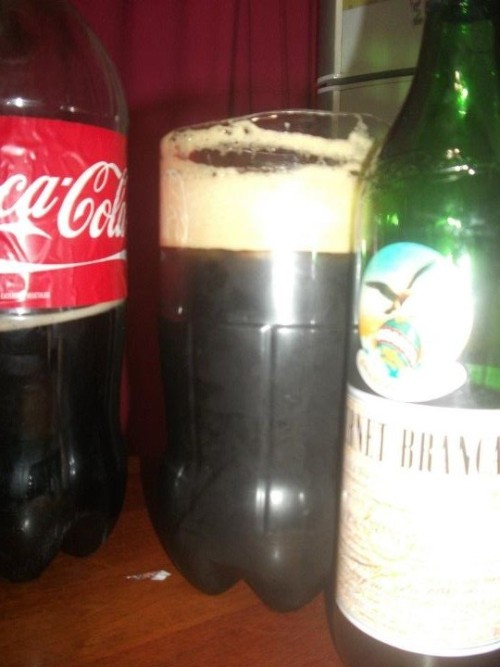
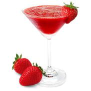
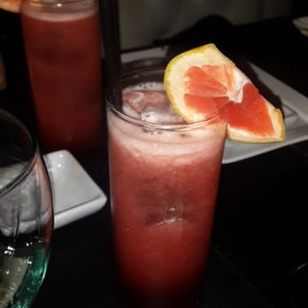

Hola fanaticos de las Previas y los Afters!
Sean todos muy Bienvenidos
Te enseñaremos a preparar
los mejores tragos para tu Previa y tu After!!
Previas
- El famoso Fernet con Coca 
- Hielo
- Fernet
- Gaseosa de Cola
- Campari con Pomelo
- Hielo
- Gaseosa de Pomelo
- Campari
Ingredientes:
Recorta una botella plastica a la mitad,
ocupa un tercio del vaso con hielo.
Servi fernet, en "la recortada",mas o menos un 30%
y despues llenalo con gaseosa de cola.
Es muy importante que al servir la gaseosa sea sumamente despacio,
inclinando el vaso para evitar la creacion de espuma.
Ingredientes:
Busca el mejor vaso que tengas,
coloca hielo hasta la mitad del vaso,
servi Campari en un 40% del vaso,
ponele gaseosa de pomelo y mezcla bien.
After
- Daikiri de frutilla 
- Hielo
- Frutillas
- Ron o Vodka
- Jugo de limon
- Campari con Jugo de Naranja 
- Hielo
- Jugo de Naranja
- Campari
- Naranja
Ingredientes:
Pone en una licuadora las frutillas, 1/4 de jugo de limon
que vamos a tener ya listo en una taza,
unos 8 cubitos de hielo, y 2 o 3 vasos de Ron o Vodka.
Licuar bien hasta que tenga un aspecto pastoso,
si te queda muy aguado agregale unos hielos mas.
Ingredientes:
Si te animas a exprimir algunas naranjas esta perfecto, sino con un jugo de naranja esta bien.
Servi en un vaso una medida de 20% de campari,agregale el jugo de 1 o 2 naranjas.
Corta unas rodajitas finas de la naranja y ponele en el borde del vaso y a disfrutar.